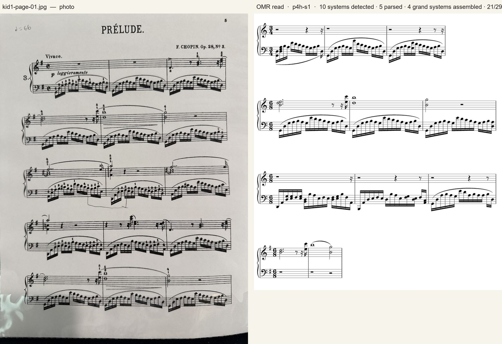
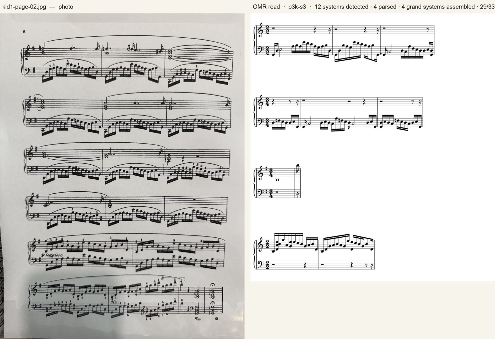
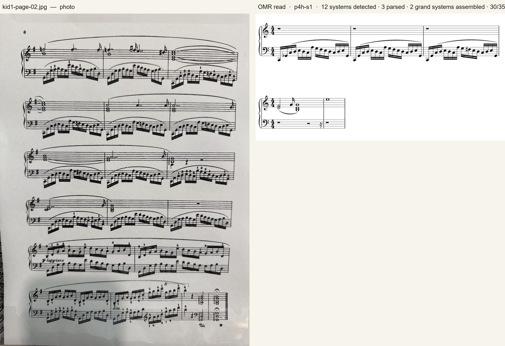
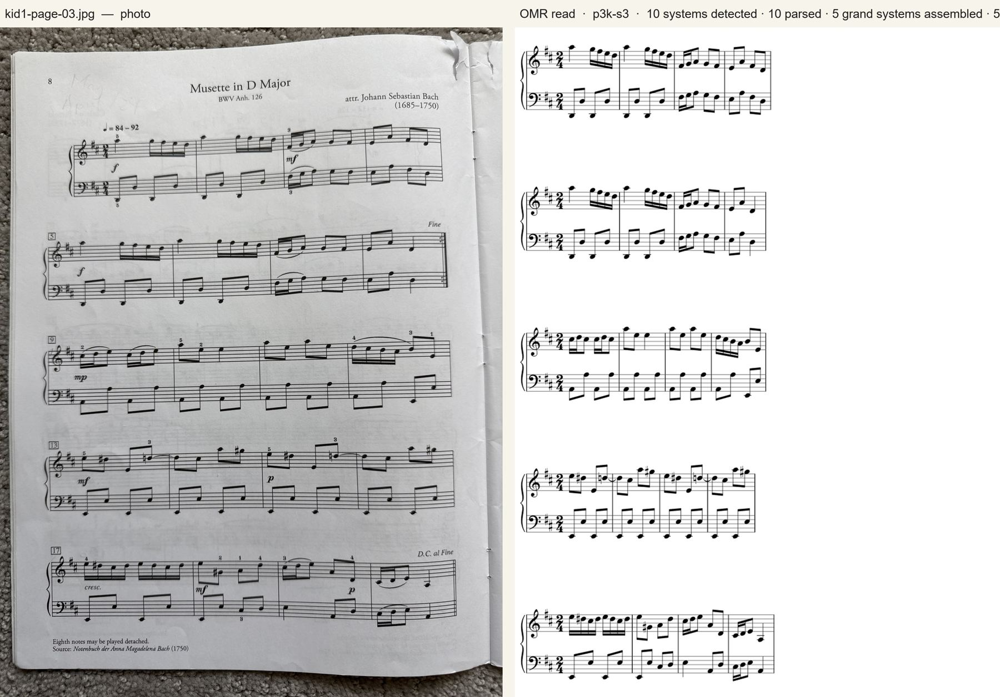
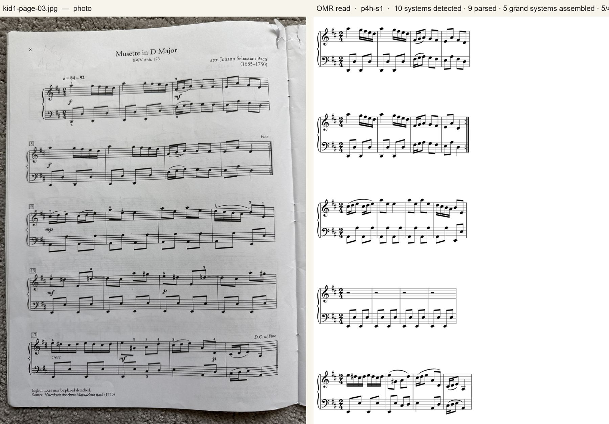
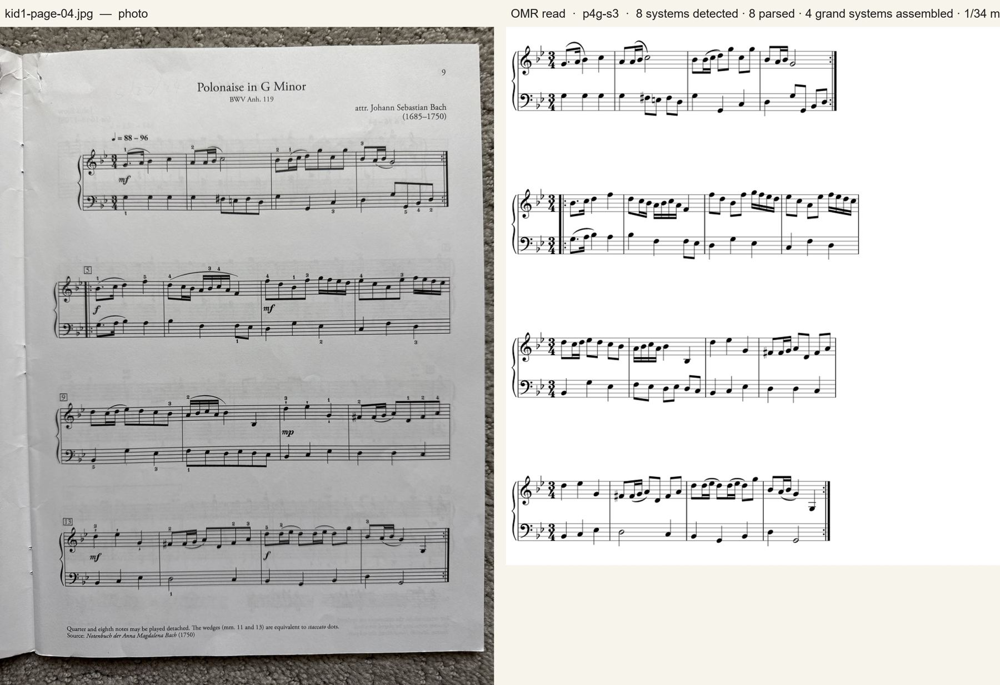
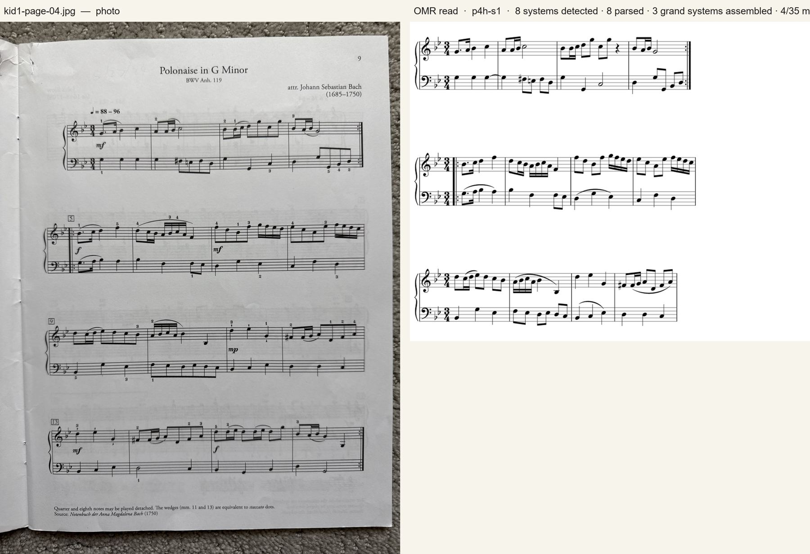

Re-read · 2026-09-04 · kid1 — photos captured 2026-09-01
kid1 re-read by the new record p4h-s1 next to p3k-s3 and p4g-s3
| page | staves found | p3k-s3 | p4g-s3 | p4h-s1 | what limits it |
|---|---|---|---|---|---|
| 小孩鋼琴練習譜 第1頁 | 10 | 3 of 10 parsed3 grand31/33 flagged | 1 of 10 parsed1 grand20/33 flagged | 5 of 10 parsed4 grand21/29 flagged | printed practice sheet, handheld: 3/10 parsed (p4g-s3 1, p3k-s3 3), 30/35 flagged — dense fingering and pedal text keep this page mostly out of scope; 15 slurs read |
| 小孩鋼琴練習譜 第2頁（可選） | 12 | 4 of 12 parsed4 grand29/33 flagged | 4 of 12 parsed3 grand21/34 flagged | 3 of 12 parsed2 grand30/35 flagged | 3/12 parsed, 2 pairs assembled, 30/35 flagged; 20 slurs read; the second practice sheet stays hard for every checkpoint |
| 備用槽 3 | 10 | 10 of 10 parsed5 grand5/40 flagged | 10 of 10 parsed5 grand3/40 flagged | 9 of 10 parsed5 grand5/40 flagged | Bach, Polonaise: 9/10 systems, 5/5 pairs assembled, 5/40 flagged (p4g-s3 3, p3k-s3 5); 12 slurs read |
| 備用槽 4 | 8 | 7 of 8 parsed4 grand8/34 flagged | 8 of 8 parsed4 grand1/34 flagged | 8 of 8 parsed3 grand4/35 flagged | Bach, Musette: 8/8 systems, 3/4 pairs assembled (p4g-s3 4/4), 4/35 flagged (p3k-s3 8); 16 slurs read |
小孩鋼琴練習譜 第1頁
photo captured 2026-09-01



小孩鋼琴練習譜 第2頁（可選）
photo captured 2026-09-01



備用槽 3
photo captured 2026-09-01
The Bach pages read by the new checkpoint of record, p4h-s1, next to the previous record p3k-s3 and the p4g-s3 seed. Slurs are read on every page (12–20 per page; p3k-s3 has no slur vocabulary), both Bach pages assemble their piano pairs, and the flagged-measure counts sit between p4g-s3 and p3k-s3 — page 04 assembles three of four pairs where p4g-s3 assembled all four. The sealed G6 benchmark is where p4h-s1's advantage is measured cleanly (staff TER 0.0027 vs 0.0084, 113 vs 105 exact staves); on these handheld pages the two p4 seeds are within a measure or two of each other.



備用槽 4
photo captured 2026-09-01


